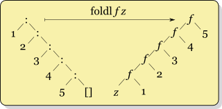
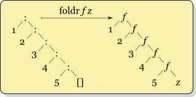
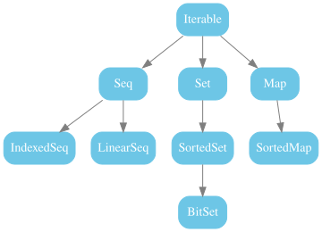
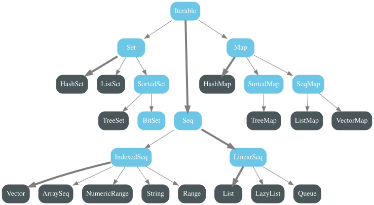
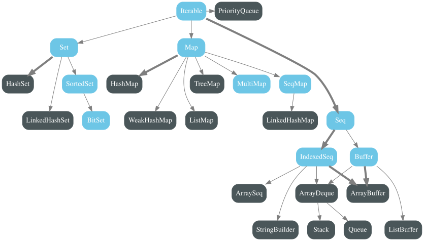

@tailrec
def map[A,B](l: List[A], f: A => B, acc: List[B] = Nil): List[B] =
if (l.isEmpty) acc.reverse
else map(l.tail, f, l.head :: acc)-- [E007] Type Mismatch Error: -------------------------------------------------
3 | else map(l.tail, f, l.head :: acc)
| ^^^^^^
| Found: A
| Required: B
|
| longer explanation available when compiling with `-explain`
1 error foundtrait Seq[A]:
def foldLeft[B](initial: B)(f: (B, A) => B): B
def foldRight[B](initial: B)(f: (A, B) => B): B
...

foldLeft: f(f(f(f(f(z, 1), 2), 3), 4), 5)
foldRight: f(z, f(1, f(2, f(3, f(4, 5)))))
foldLeft/foldRight внасят абстракция над опашковата рекурсия,
в
случай на операции върху колекции (т.е. предварително известни
елементи)
foldLeft: f(f(f(f(f(z, 1), 2), 3), 4), 5)
винаги
стигаме до последния елемент – не е възможен lazy evaluation
foldRight: f(z, f(1, f(2, f(3, f(4, 5)))))
Ако
параметрите се подават по име или lazily (Haskell), f може
да реши да прекъсне изчислението по-рано
В Scala се изчисляват strict-но и stack safe
(В Haskell foldl и foldr трупат стек, foldl’ е strict и stack safe)


Всеки trait има apply, който създава колекция с
default-на имплементация:

trait PartialFunction[A, B] extends Function1[A, B]:
def isDefinedAt(a: A): Boolean
def apply(a: A): BPattern matching-а може да дефинира частични функции:
trait Seq[A]:
def zip[B](other: Seq[B]): Seq[(A, B)]
def groupBy[K](f: A => K): Map[K, Seq[A]]
// маха едно ниво на влагане, напр.
def flatten[B](/* ... */): B
// като комбинация от map + flatten
def flatMap[B](f: A => Seq[B]): Seq[B]List(1, 2, 3, 4).zip(List("one", "two", "three")) // List((1, "one"), (2, "two"), (3, "three"))
List(
Person("Zdravko", "Varna"),
Person("Petar", "Varna"),
Person("Alex", "Sofia"),
Person("Nikoleta", "Karnobat"),
Person("Aleksandar", "Varna"),
Person("Kamen", "Sofia")
).groupBy(_.city)
// Map(
// "Varna" -> List(Person("Zdravko", "Varna"), Person("Petar", "Varna"),
// Person("Aleksandar", "Varna")),
// "Sofia" -> List(Person("Alex", "Sofia"), Person("Kamen", "Sofia"))
// "Karnobat" -> List(Person("Nikoleta", "Karnobat"))
// )
List(List(1, 2), List(3), List(4, 5)).flatten // List(1, 2, 3, 4, 5)
List(1, 10, 100).flatMap(n => List(n, n + 1, n + 2))
// List(1, 2, 3, 10, 11, 12, 100, 101, 102val list = List(1, 2, 3)
for
i <- list
if i % 2 == 0
c <- 'a' to 'c'
yield s"$i$c"
// List("2a", "2b", "2c")for е syntax sugar за:
doSeq в HaskellwithFilter е non-strict версия на
filter